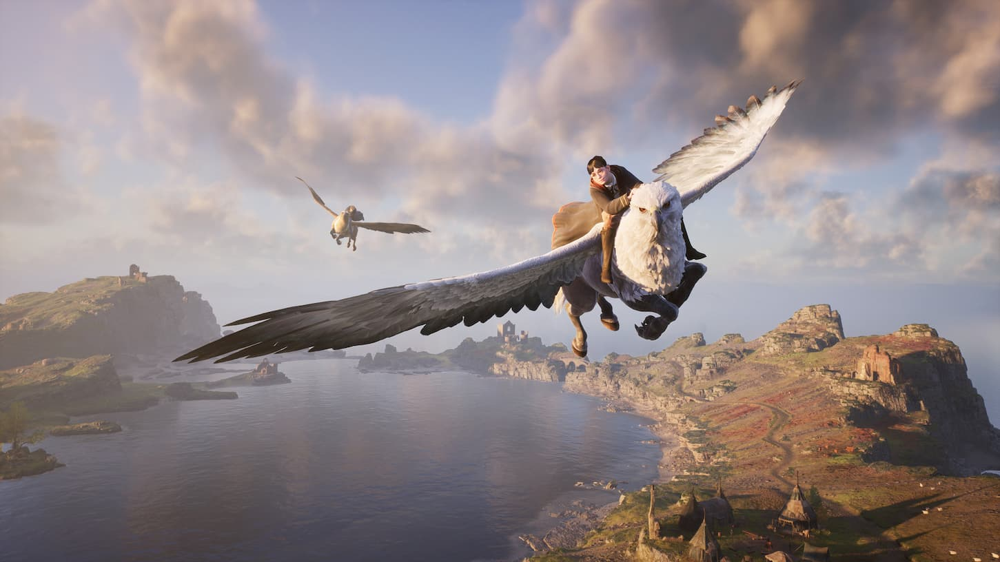

Hogwarts Legacy: diretor garante que "não existe planos" para DLC no momento
Foco no desenvolvimento foi em trazer o jogo base à vida
Por Raphael Giannoti
Hogwarts Legacy oferece conteúdo suficiente para garantir dezenas de horas de gameplay, e para aqueles que já fizeram tudo (ou quase), não aguarde por uma DLC, já que não está nos planos dos desenvolvedores. Em entrevista ao IGN, Alan Tew, diretor do game, deixa claro que "não existe planos para uma DLC".
Alan Tew explica que a equipe da Avalanche Software focou na produção do jogo base, por isso conteúdos adicionais não estão nos planos do estúdio."Nós realmente estivemos trazendo Hogwarts Life à vida, então nesse momento, não existe planos para uma DLC", disse o diretor.
Hogwarts Legacy pode passar das 100h, garante devs
Antes do lançamento de Hogwarts Legacy, a diretora narrativa do game, Moira Squier, havia revelado que o game conta com mais de 100 missões secundárias. “Até mesmo as missões secundárias, das quais há mais de 100, permitem que os jogadores manipulem a campanha principal pela virtude das experiências que tiveram”.
Ela explica que ao completar uma missão opcional, os jogadores também podem mudar o rumo da trama principal do game. “A ordem na qual os jogadores escolherem completar essas missões vai impactar sua história e game. Tudo está interconectado”, disse a diretora narrativa
Tudo isso garante mais de 100 horas de gameplay para quem busca fazer tudo que Hogwarts Legacy oferece. Kelly Murphy, designer chefe do jogo, disse que quem fizer somente as missões da história principal, precisará de cerca e 40 horas.
Voltar para a página de notícias